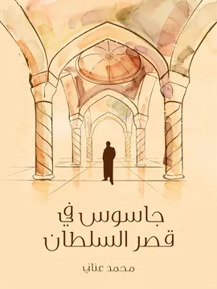

جاسوس في قصر السلطان

قراءة عربية أصلية محددة النطاق في الصفحات 9 إلى 14 من ملف PDF المرتبط، وليست تلخيصا كاملا للكتاب. نناقش ما تدعمه هذه المقاطع فقط.
مسرحية عناني: مقهى في القاهرة المملوكية وشاعر مأجور
تقع أحداث المسرحية في القرن السابع الهجري إبان حكم المماليك، ومكانها القاهرة. شخصياتها: محمود النجار المصري، وغازية التي تربت في كنف المماليك، وشهبندر البحار الشاب، وحسنة التي تعمل في قصر السلطان، وفرج الله الحداد الذي تقدم به السن، وعبيد الخياط، وأم علية التي تخطت الثلاثين، ومسعود الشاب، وخاتون الأميرة المملوكية، والسلطان سيف الدين القشقار، وعلم الدين الباشقردي وعز الدين الكرجي من القواد، وشاعر مصري مأجور، وجاسوس، وتتري، ومناد. في المشهد الأول يرتفع الستار على جانب من أحد أحياء القاهرة القديمة: مقهى في المنتصف يجلس في وسطه الشاعر ممسكًا بربابته وحوله حشد من أولاد البلد وبعض الأطفال، وإلى اليسار ثلاثة دكاكين مفتوحة فارغة: لخياط ولحداد ولنجار. عندما يبدأ الشاعر الإنشاد يخرج الثلاثة فيجلسون على كراسي أمام الدكاكين ثم يندمج عبيد في الإنشاد.
زاوية وحدود القراءة
قراءة موجزة من ص ٩ إلى ص ١٤ من أصل ١٣٠ صفحة، تعرض دليل الشخصيات والمشهد الأول، لا المسرحية كاملة.
الطبعة والقراءة
هذه النسخة من الكتاب صادرة ومتاحة مجانًا بموجب اتفاق قانوني بين مؤسسة هنداوي والسيد الدكتور محمد عناني.
تنزيل PDF المجاني ↓ القراءة والمصدر الرسمي ↗